取り組んだ問題の説明
クレーンゲームをやりすぎて、母親に怒られている子供を見つけた。そこでふと、100円玉って使うことを躊躇しないなと感じ、それがお金の使い過ぎにつながっていると気づいた。今回は、小銭の使用を抑え、節約につなげることができる製品プロトタイプを制作した。
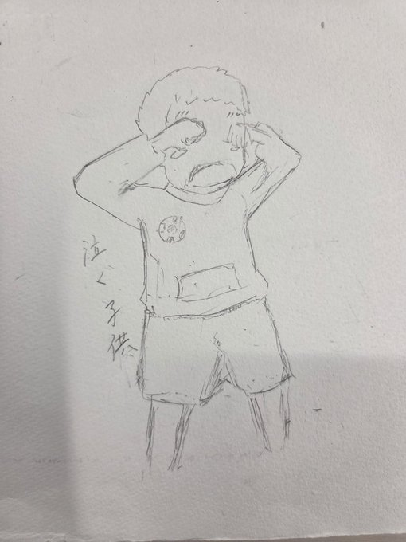
怒られて泣く子供
製品
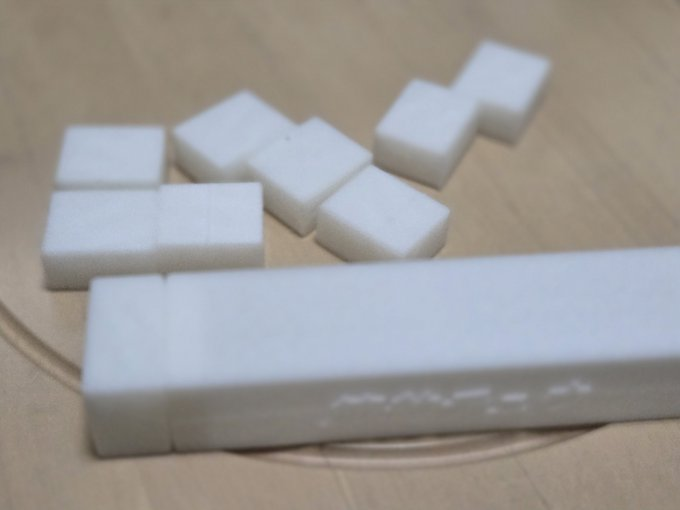
説明
100円玉の使用を控えることができるようにする製品。ハイチュウって下の方にあるものほど取りにくいなと感じたことから、同じような構造にすることで、100円玉を取ることを億劫に感じるようになるのではないかと考えた。ハイチュウのブロックに見立てたものに硬貨を一枚入れ積んでいくことで、小銭が下にあるブロックほど取りにくくなり、手間がかかる。しっかり閉まる蓋がついているので小銭をなくす心配はないはずである。
POV
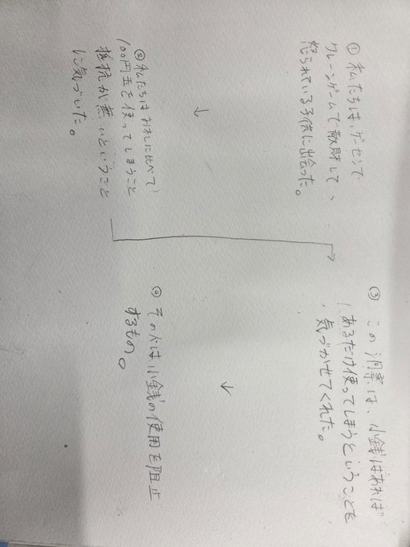
初期構想
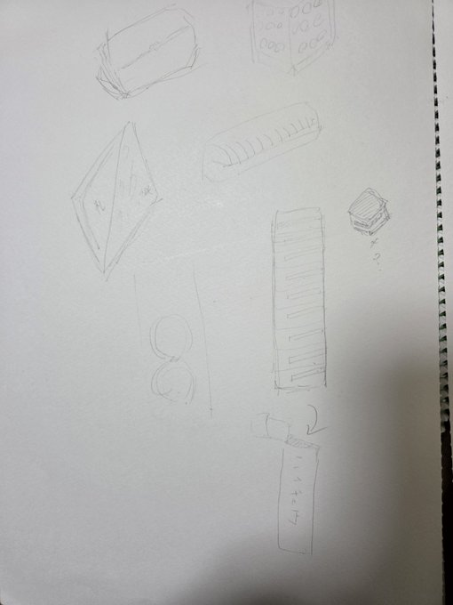
実際に使ってみた
写真
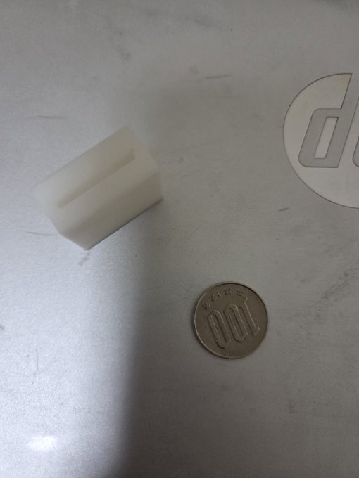
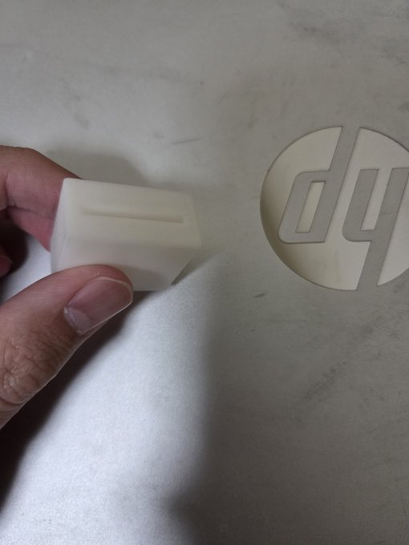
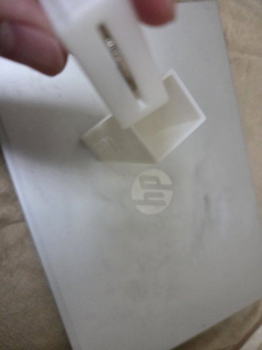
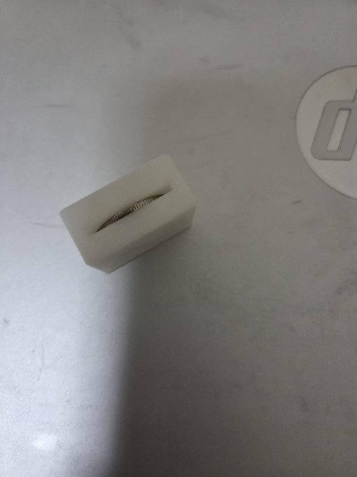
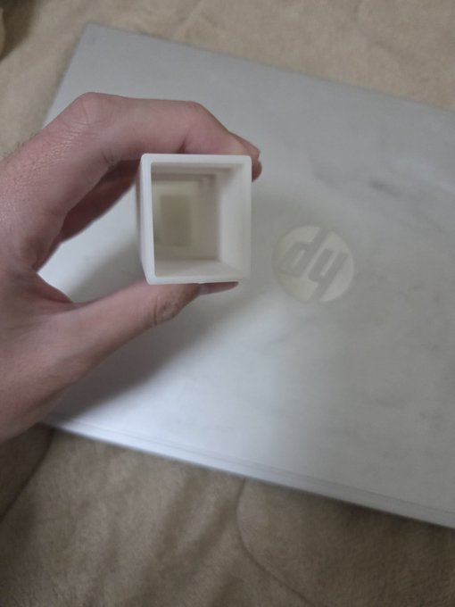
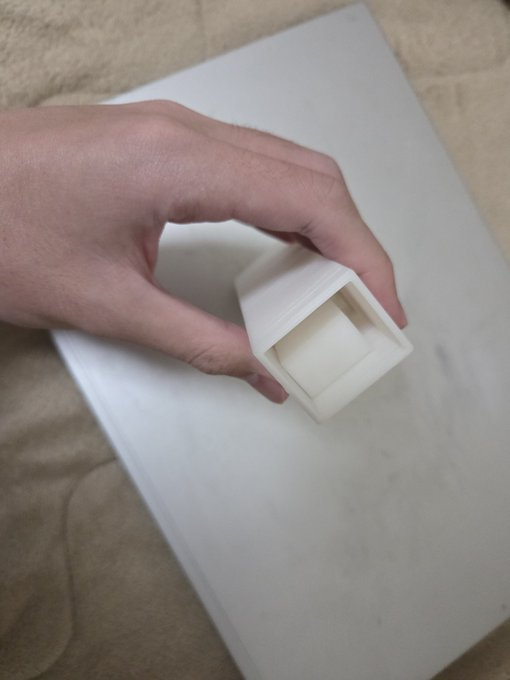
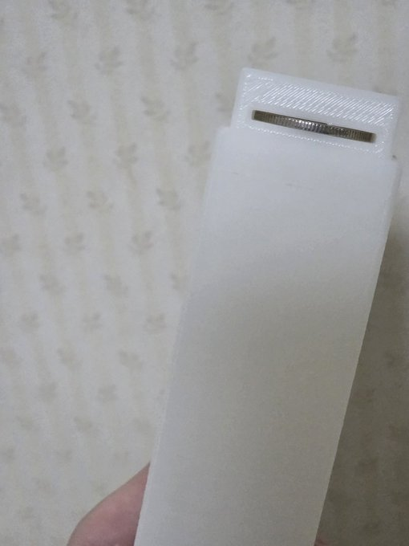

動画
反省点、改善点
はがした後の残りがあったせいでブロックが筒にはまらなかった。中身には余裕があってよかったのかもしれない。ほんとは7個くらい入るはずなんです…。
ブロックを糸でつなげると、散らかりがなくなるかもしれない。
使用機材
3Dプリンター